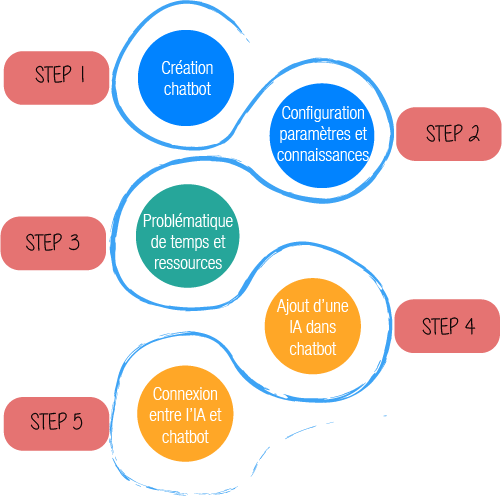

Comment intégrer un chatbot intelligent en 20 minutes
Déroulé de la formation

Introduction aux solutions


Configuration sur Facebook
Intégration de Chatfuel
Intégration de Recast.ai

// MODULES ET INITIALISATION DE NOTRE APPLICATION
const express = require('express');
const url = require('url');
const axios = require('axios');
const RECAST_REQUEST_TOKEN = 'YOUR_TOKEN_HERE';
const PORT = 5000;
const app = express();
// Mise en place du serveur
// Informations réceptionnées par Chatfuel
app.get('/', (req, res) => {
const query = url.parse(req.url, true).query;
const userId = query['chatfuel user id'];
const userMessage = query['user_message'];
console.log(query);
// Appel à l'api Recast
return axios
.post(
'https://api.recast.ai/build/v1/dialog',
{
message: { content: userMessage, type: 'application/json' },
conversation_id: userId,
},
{ headers: { Authorization: `Token ${RECAST_REQUEST_TOKEN}` } }
)
.then(body => {
// Utilisation de la fonction pour mettre les messages
// au bon format json pour chatfuel
const formattedMessages = body.data.results.messages.map(chatfuelFormat);
console.log(formattedMessages);
// Reponse de l'IA
res.json({
messages: formattedMessages,
});
});
})
.listen(PORT, () => console.log(`App started on port ${5000}`));
// Fonction de Formatage (Recast à Chatfuel)
function chatfuelFormat(message) {
// Source : { type: 'text', content: 'XXX' }
// Destination { text: 'XXX' }
if (message.type === 'text') {
return { text: message.content };
}
// Source: { type: 'picture', content: 'URL' }
// Destination: { attachment: { type: 'image', payload: { url: 'URL' } } }
if (message.type === 'picture') {
return {
attachment: {
type: 'image',
payload: { url: message.content },
},
};
}
console.error('Unsupported message format: ', message.type);
return { text: 'An error occured' };
}